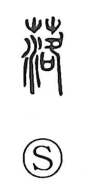

落

Kun: ochiru, otosu | On: raku
to fall ・ to drop ・ to come down ・ to cease
Explanation
落 combines the plant element 艹 with 洛, which supplies the sound. Its concrete sense is the falling of leaves from a tree. From falling come descending, dwindling, decline, and finally stopping or coming to an end. Related 零 concerns falling rain or dew.
A further use belongs to ceremonies marking the completion of an important object or building. When a bell was cast, sacrificial blood was poured over it in a rite of purification; a newly finished terrace or residence could likewise be inaugurated with a ceremony. 落 names this completion rite, preserved in 落成.
Other later uses refer to an enclosed court, a dwelling, or a settlement, as in 院落 and 村落.